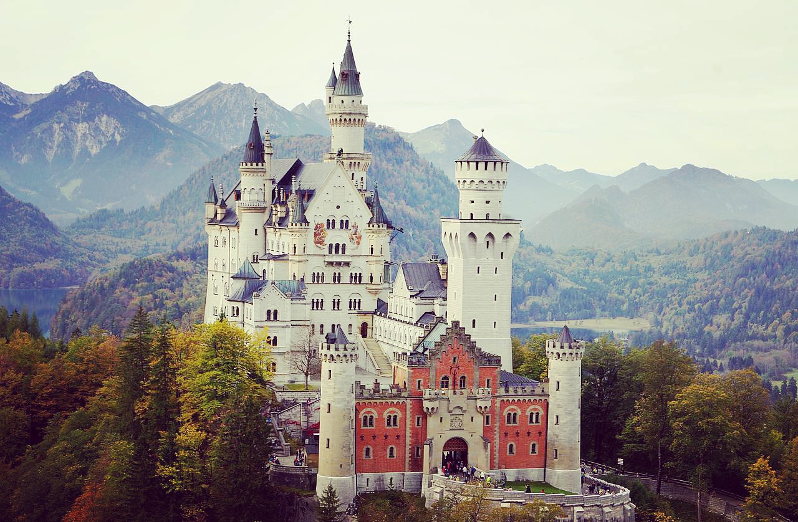

Sehenswürdigkeiten in der Nähe von Mauerstetten

Reutwald-Lehrpfad
(in unmittelbarer Nähe des Stockerbergs)
mauerstetten.de/freizeit-kultur/lokale-agenda-21/reutwaldpfad
Altstadt Kaufbeurenn
(ca. 5km von Mauerstetten entfernt)
kaufbeuren-tourismus.de/sehenswuerdigkeiten/kaufbeurer-altstadt.html
Crescentiakloster Kaufbeuren
(ca. 5km von Mauerstetten entfernt)
crescentiakloster.de
Altstadt Füssen
(ca. 50km von Mauerstetten und 130km von München entfernt)
fuessen.de/romantisches-fuessen/romantische-altstadt.html
Schloss Neuschwanstein
(ca. 50km von Mauerstetten und 130km von München entfernt)
neuschwanstein.de